Código
# instalar/cargar paquetes
sketchy::load_packages(
c("ggplot2",
"viridis",
"lmerTest",
"sjPlot")
)
- Comprender la inferencia estadística a través de los modelos de regresión lineal
Familiarizarse con la construcción de modelos lineales
Extender los modelos lineales a diferentes estructuras de datos
Paquetes a utilizar en este manual:
# instalar/cargar paquetes
sketchy::load_packages(
c("ggplot2",
"viridis",
"lmerTest",
"sjPlot")
)::: {.alert .alert-warning}
Las regresiones lineales se basan en la ecuación lineal a = mx + b que aprendimos en el colegio. La representación formal tiene este aspecto:
\(\hat{Y}\): variable respuesta
\(\beta_{o}\): intercepto
\(\beta_{1}\): estimado de la magnitud del efecto de \(x_{1}\) en \(\hat{Y}\) (también conocido como tamaño de efecto, coeficiente o simplemente “estimado”)
\(x_{1}\): variable predictora
El objetivo más común de una regresión lineal es la estimación de los valores de \(\beta_{*}\). Esto se consigue encontrando la línea recta que mejor se ajusta y que representa la asociación entre un predictor y la respuesta:

Estos \(\beta_{*}\) son el tamaño de efecto estimado del predictor correspondiente (por ejemplo, \(\beta_{1}\) es el tamaño de efecto \(x_{1}\)). Su valor representa el cambio medio en \(\hat{Y}\) (en unidades \(\hat{Y}\)) para una unidad de cambio en \(\beta_{*}\). Por lo tanto, la hipótesis nula es que esos \(\beta_{*}\) no son diferentes de 0:
lo que equivale a esto:
Por ejemplo, un modelo de regresión con este resultado:

:::
Para sacar el máximo provecho de los modelos lineales necesitamos sentirnos cómodos con ellos. Empezaremos explorando la función de regresión lineal de R lm(). En R la mayoría de los modelos lineales y sus extensiones comparten formatos comunes de entrada de datos y resultados, lo que facilita su aplicación una vez que entendemos sus fundamentos.
Utilizaremos el juego de datos ‘trees’ que viene por defecto con R. ‘trees’ proporciona medidas del diámetro (etiquetado como ‘Girth’), altura y volumen de 31 cerezos talados:
head(trees)| Girth | Height | Volume |
|---|---|---|
| 8.3 | 70 | 10.3 |
| 8.6 | 65 | 10.3 |
| 8.8 | 63 | 10.2 |
| 10.5 | 72 | 16.4 |
| 10.7 | 81 | 18.8 |
| 10.8 | 83 | 19.7 |
La función básica de R para construir un modelo lineal es lm(). Veamos los componentes básicos de un modelo de regresión utilizando lm():

Podemos correr este modelo para ver el resultado:
reg_mod <- lm(formula = Height ~ Girth, data = trees)
summary(reg_mod)
Call:
lm(formula = Height ~ Girth, data = trees)
Residuals:
Min 1Q Median 3Q Max
-12.582 -2.769 0.316 2.473 9.946
Coefficients:
Estimate Std. Error t value Pr(>|t|)
(Intercept) 62.031 4.383 14.15 1.5e-14 ***
Girth 1.054 0.322 3.27 0.0028 **
---
Signif. codes: 0 '***' 0.001 '**' 0.01 '*' 0.05 '.' 0.1 ' ' 1
Residual standard error: 5.54 on 29 degrees of freedom
Multiple R-squared: 0.27, Adjusted R-squared: 0.244
F-statistic: 10.7 on 1 and 29 DF, p-value: 0.00276
Esto es lo que significan los elementos de la salida:
Llamada (call): la función y los parámetros que se utilizaron para crear el modelo
Residuales (residuals): distribución de los residuales. Los residuales son la diferencia entre lo que predijo el modelo y el valor real de y. Esta es una representación gráfica de los residuales:
`geom_smooth()` using formula = 'y ~ x'
Coeficientes (coefficients): contiene los tamaños de efecto (‘Estimates’), una medida de su incertidumbre (‘Standar error’), la estadística asociada (‘t value’) y el valor p (‘Pr(>|t|)’). Los tamaño de efecto o estimados se dan como el cambio promedio en y por cada aumento de 1 unidad en x. Para este ejemplo el estimado es de 1,0544 \(in / in\). A pesar de que las unidades se anulan (`1,0544 \(in / in\) = 1,0544) tenerlas en cuenta sigue siendo biológicamente significativo. Significan que, en promedio, y un aumento de 1 pulgada en la circunferencia que se espera un aumento de 1,0544 pulgadas en la altura.
Error estándar de los residuales (residual standard error): se explica por sí mismo. El error estándar de los residuales
R-cuadrado múltiple (multiple R-squared): el coeficiente de determinación, que pretende ser una medida de lo bien que su modelo se ajusta a los datos
R-cuadrado ajustado (adjusted R-squared): similar al ‘R-cuadrado múltiple’ pero penalizado por el número de parámetros
Estadístico F (F-statistic): estadístico para una prueba global que comprueba si al menos uno de sus coeficientes es distinto de cero
Valor de p: probabilidad de una prueba global que comprueba si al menos uno de sus coeficientes es distinto de cero
Utilizaremos lm() para mostrar la flexibilidad de los modelos de regresión. Los componentes de regresión se añadirán gradualmente para que podamos tomarnos el tiempo de entender cada uno de ellos así como los correspondientes cambios en la salida de la regresión.
Primero vamos a crear una variable numérica de respuesta:
# definir semilla
set.seed(123)
# numero de observaciones
n <- 50
# variables aleatorias
y <- rnorm(n = n, mean = 0, sd = 1)
# put it in a data frame
y_data <- data.frame(y)
Esta única variable puede introducirse en un modelo de regresión sólo con intercepto. Para ello, debemos suministrar la fórmula del modelo y los datos a lm():
# run model
y_mod <- lm(formula = y ~ 1, data = y_data)
Lo que equivale a:
Podemos obtener el resumen por defecto de los resultados del modelo ejecutando summary() en el objeto de salida ‘y_mod’:
summary(y_mod)
Call:
lm(formula = y ~ 1, data = y_data)
Residuals:
Min 1Q Median 3Q Max
-2.001 -0.594 -0.107 0.664 2.135
Coefficients:
Estimate Std. Error t value Pr(>|t|)
(Intercept) 0.0344 0.1309 0.26 0.79
Residual standard error: 0.926 on 49 degrees of freedom
Puede ser bastante informativo graficar los tamaños de efecto (aunque en este caso sólo tenemos uno):
ci_df <- data.frame(param = names(y_mod$coefficients),
est = y_mod$coefficients, confint(y_mod))
ggplot(ci_df, aes(x=param, y=est)) +
geom_hline(yintercept = 0, color="red", lty = 2) +
geom_pointrange(aes(ymin = X2.5.., ymax = X97.5..)) +
labs(x = "Parámetro", y = "Tamaño de efecto") +
coord_flip()
Para evaluar la importancia de la asociación nos centramos en la tabla de coeficientes:
Estimate Std. Error t value Pr(>|t|)
(Intercept) 0.034404 0.13094 0.26275 0.79385En este ejemplo no hay predictores en el modelo, por lo que sólo tenemos una estimación para el intercepto (\(\beta_0\))
El modelo nos dice que el intercepto se estima en 0.0344 y que este valor no es significativamente diferente de 0 (valor p = 0.79385)
En este caso el intercepto es simplemente la media de la variable de respuesta
mean(y_data$y)[1] 0.034404
“Encontramos que un modelo sólo con intercepto (intercept-only model) explicaba mejor las concentraciones de linfocitos y eosinófilos en las aves, indicando que las concentraciones de estos tipos de células eran independientes de la masa corporal.”
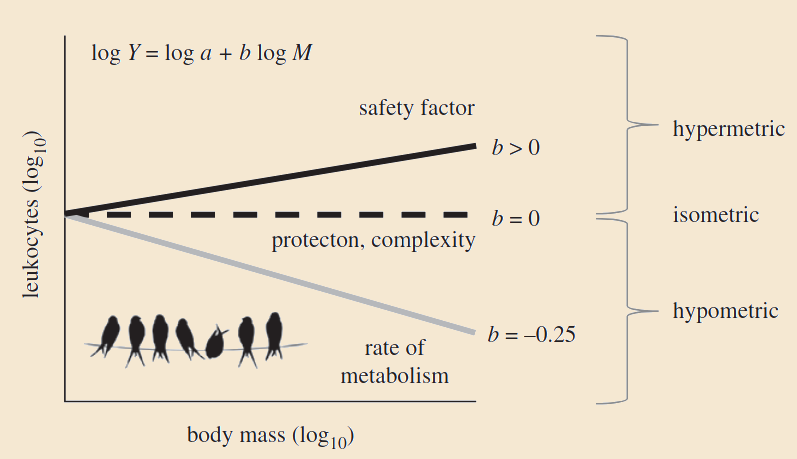
Ejercicio 3
Cambie el argumento ‘mean’ en la llamada de la función “rnorm()` en la simulación para el modelo de solo intercepto un valor distinto de 0 y observe cómo cambian los valores en la tabla de coeficientes
Cambia el argumento sd en la llamada a la función rnorm() por un valor más alto y observe cómo cambian los valores en la tabla de coeficientes
Podemos crear 2 variables numéricas no relacionadas así:
# definir semilla
set.seed(123)
# numero de observaciones
n <- 50
# variables aleatorias
y <- rnorm(n = n, mean = 0, sd = 1)
x1 <- rnorm(n = n, mean = 0, sd = 1)
# crear data frame
xy_datos <- data.frame(x1, y)
Estas dos variables pueden introducirse en un modelo de regresión para evaluar la asociación entre ellas:
# construir model
xy_mod <- lm(formula = y ~ x1, data = xy_datos)
# graficar
ggplot(xy_datos, aes(x = x1, y = y)) +
geom_smooth(method = "lm", se = FALSE) +
geom_point() # graficar points`geom_smooth()` using formula = 'y ~ x'
Que es equivalente a esto:
Imprimamos el resumen de este modelo:
summary(xy_mod)
Call:
lm(formula = y ~ x1, data = xy_datos)
Residuals:
Min 1Q Median 3Q Max
-2.004 -0.624 -0.123 0.687 2.106
Coefficients:
Estimate Std. Error t value Pr(>|t|)
(Intercept) 0.0398 0.1340 0.30 0.77
x1 -0.0367 0.1475 -0.25 0.80
Residual standard error: 0.935 on 48 degrees of freedom
Multiple R-squared: 0.00129, Adjusted R-squared: -0.0195
F-statistic: 0.0618 on 1 and 48 DF, p-value: 0.805
… y graficar los tamaños de efecto:
ci_df <- data.frame(param = names(xy_mod$coefficients),
est = xy_mod$coefficients, confint(xy_mod))
ggplot(ci_df, aes(x=param, y=est)) +
geom_hline(yintercept = 0, color="red", lty = 2) +
geom_pointrange(aes(ymin = X2.5.., ymax = X97.5..)) +
labs(x = "Parámetro", y = "Tamaño de efecto") +
coord_flip()
Deberíamos “diagnosticar” la idoneidad del modelo inspeccionando más de cerca la distribución de los residuales. La función plot_model() del paquete sjPlot hace un buen trabajo para crear gráficos de diagnóstico para modelos lineales:
plot_model(xy_mod, type = "diag")[[1]]`geom_smooth()` using formula = 'y ~ x'
[[2]]
[[3]]`geom_smooth()` using formula = 'y ~ x'
Cuadro con coeficientes:
Estimate Std. Error t value Pr(>|t|)
(Intercept) 0.039774 0.13396 0.29690 0.76782
x1 -0.036679 0.14750 -0.24867 0.80467
En este ejemplo hemos añadido un predictor al modelo, por lo que hemos obtenido una estimado adicional (y una fila extra, ‘x1’)
El modelo nos dice que la estimación de ‘x1’ es -0.03668 y que no es significativamente diferente de 0 (p = 0.80467)
Podemos utilizar la fórmula del modelo lineal anterior para simular dos variables continuas asociadas así:
# definir semilla
set.seed(123)
# numero de observaciones
n <- 50
b0 <- -4
b1 <- 3
error <- rnorm(n = n, sd = 3)
# variables aleatorias
x1 <- rnorm(n = n, mean = 0, sd = 1)
y <- b0 + b1 * x1 + error
# crear data frame
xy_datos2 <- data.frame(x1, y)
Note que también hemos añadido un término de error, por lo que la asociación no es perfecta. Vamos a correr el modelo y graficar la asociación entre las dos variables:
# construir model
xy_mod2 <- lm(formula = y ~ x1, data = xy_datos2)
# graficar
ggplot(xy_datos2, aes(x = x1, y = y)) +
geom_smooth(method = "lm", se = FALSE) +
geom_point() # graficar points`geom_smooth()` using formula = 'y ~ x'
La fórmula es la misma que la del modelo anterior:
Este es el resumen del modelo:
summary(xy_mod2)
Call:
lm(formula = y ~ x1, data = xy_datos2)
Residuals:
Min 1Q Median 3Q Max
-6.01 -1.87 -0.37 2.06 6.32
Coefficients:
Estimate Std. Error t value Pr(>|t|)
(Intercept) -3.881 0.402 -9.66 7.9e-13 ***
x1 2.890 0.442 6.53 3.9e-08 ***
---
Signif. codes: 0 '***' 0.001 '**' 0.01 '*' 0.05 '.' 0.1 ' ' 1
Residual standard error: 2.8 on 48 degrees of freedom
Multiple R-squared: 0.471, Adjusted R-squared: 0.459
F-statistic: 42.7 on 1 and 48 DF, p-value: 3.85e-08
.. el gráfico con los tamaños de efecto:
ci_df <- data.frame(param = names(xy_mod2$coefficients),
est = xy_mod2$coefficients, confint(xy_mod2))
ggplot(ci_df, aes(x=param, y=est)) +
geom_hline(yintercept = 0, color="red", lty = 2) +
geom_pointrange(aes(ymin = X2.5.., ymax = X97.5..)) +
labs(x = "Parámetro", y = "Tamaño de efecto") +
coord_flip()
… y los gráficos diagnósticos del modelo:
plot_model(xy_mod2, type = "diag")[[1]]`geom_smooth()` using formula = 'y ~ x'
[[2]]
[[3]]`geom_smooth()` using formula = 'y ~ x'
Cuadro con los coeficientes (estimados):
Estimate Std. Error t value Pr(>|t|)
(Intercept) -3.8807 0.40188 -9.6562 7.8616e-13
x1 2.8900 0.44249 6.5311 3.8537e-08El modelo nos dice que \(beta_1\) (el tamaño de efecto de ‘x1’) es 2.88996 y que es significativamente diferente de 0 (p = 3.85365^{-8})
Los valores simulados de los parámetros de regresión pueden compararse con el resumen del modelo lm() para tener una idea de la precisión del modelo:

“… la coordinación y la consistencia de los duetos son mayores en las especies con temporadas de apareamiento especialmente largas.”

Ejercicio 4
Aumente el tamaño de la muestra (n) a 1000 o más
¿Cómo cambiaron los estimados del tamaño de efecto (\(\beta\))?
¿Cómo cambió los intervalos de confianza del tamaño de efecto?
Ahora cambie n a 15 y compruebe de nuevo las estimaciones del modelo (esta vez compruebe también el valor p)
La regresión lineal múltiple es una extensión del modelo de regresión lineal simple que puede tomar varios predictores:
La fórmula parece compleja, pero sólo quiere decir que cualquier parámetro adicional tendrá su propia estimación (\(\beta\)). La fórmula para una regresión lineal de dos predictores se ve así:
… y se puede simular así:
# semila
set.seed(123)
# numero de observaciones
n <- 50
b0 <- -4
b1 <- 3
b2 <- -2
error <- rnorm(n = n, mean = 0, sd = 3)
# variables aleatorias
x1 <- rnorm(n = n, mean = 0, sd = 1)
x2 <- rnorm(n = n, mean = 0, sd = 1)
y <- b0 + b1 * x1 + b2 * x2 + error
# crear un data frame
xy_datos_multp <- data.frame(x1, x2, y)
# construir el modelo
xy_mod_multp <- lm(formula = y ~ x1 + x2, data = xy_datos_multp)
summary(xy_mod_multp)
Call:
lm(formula = y ~ x1 + x2, data = xy_datos_multp)
Residuals:
Min 1Q Median 3Q Max
-5.986 -1.893 -0.363 2.002 6.413
Coefficients:
Estimate Std. Error t value Pr(>|t|)
(Intercept) -3.865 0.417 -9.27 3.5e-12 ***
x1 2.901 0.453 6.41 6.4e-08 ***
x2 -1.932 0.414 -4.67 2.6e-05 ***
---
Signif. codes: 0 '***' 0.001 '**' 0.01 '*' 0.05 '.' 0.1 ' ' 1
Residual standard error: 2.83 on 47 degrees of freedom
Multiple R-squared: 0.612, Adjusted R-squared: 0.595
F-statistic: 37 on 2 and 47 DF, p-value: 2.23e-10
… graficar los tamaños de efecto:
ci_df <- data.frame(param = names(xy_mod_multp$coefficients),
est = xy_mod_multp$coefficients, confint(xy_mod_multp))
ggplot(ci_df, aes(x=param, y=est)) +
geom_hline(yintercept = 0, color="red", lty = 2) +
geom_pointrange(aes(ymin = X2.5.., ymax = X97.5..)) +
labs(x = "Parámetro", y = "Tamaño de efecto") +
coord_flip()
… y los gráficos diagnósticos:
plot_model(xy_mod_multp, type = "diag")[[1]]`geom_smooth()` using formula = 'y ~ x'
[[2]]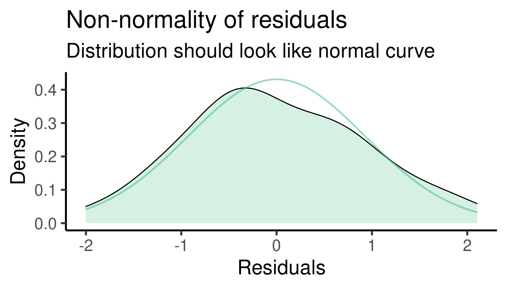
[[3]]`geom_smooth()` using formula = 'y ~ x'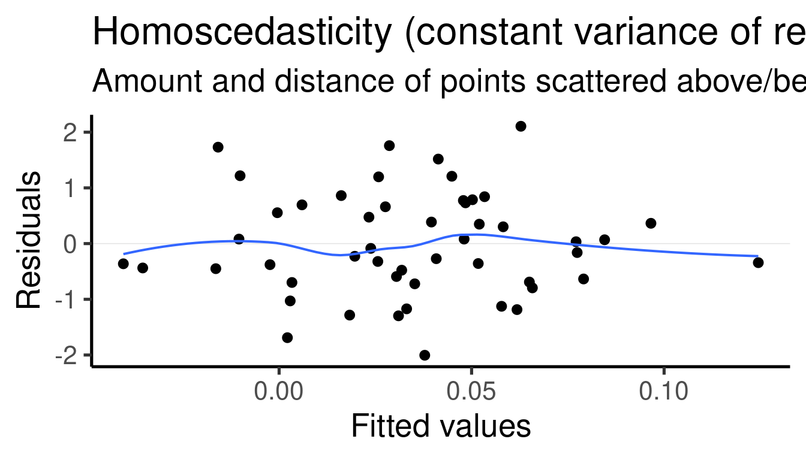
Cuadro con los coeficientes (estimados):
Estimate Std. Error t value Pr(>|t|)
(Intercept) -3.8652 0.41695 -9.2702 3.4856e-12
x1 2.9015 0.45260 6.4108 6.4137e-08
x2 -1.9324 0.41422 -4.6650 2.5851e-05El modelo encontró que \(\beta_1\) (el tamaño de efecto de ‘x1’) es 2.9015 y que es significativamente diferente de 0 (p = 6.41368^{-8}). Este es el efecto de ‘x1’ sobre ‘y’ una vez removida la variación explicada por ‘x2’.
También se encontró que el \(\beta_2\) (el tamaño de efecto de ‘x2’) es -1.93235 y que también es significativamente diferente de 0 (p = 2.58513^{-5}). Este es el efecto de ‘x2’ sobre ‘y’ una vez removida la variación explicada por ‘x1’.
Los valores simulados de los parámetros de regresión pueden compararse con el resumen del modelo lm() para tener una idea de la precisión del modelo:
\(\beta_1\) se fijó en 3 y se estimó como 2.901.
\(\beta_2\) (el tamaño de efecto de ‘x2’) se fijó en -2 y se estimó como -1.932.
“La memoria espacial, el tamaño corporal y el largo de la punta del pico … predijeron positivamente la probabilidad de adquirir y defender un territorio.”
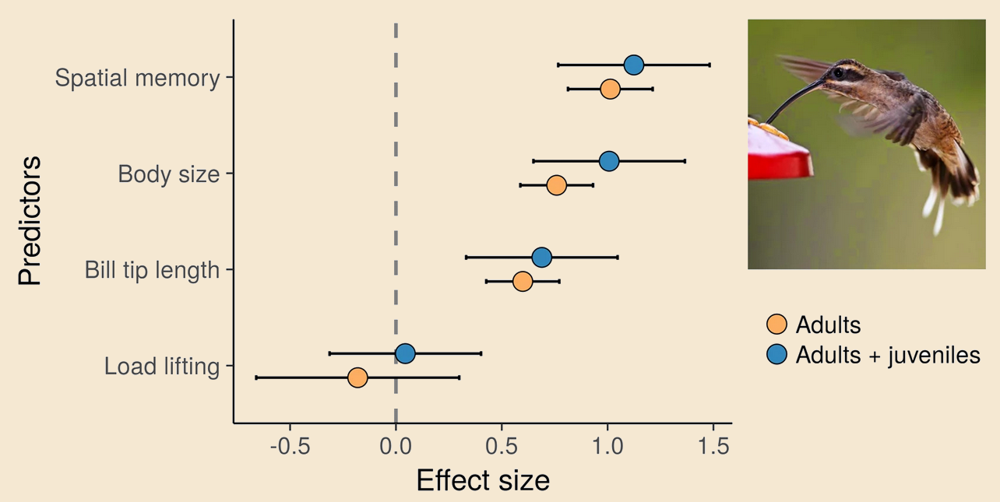
Hay un punto importante que es necesario enfatizar aquí: la regresión múltiple estima el efecto de un predictor después de tener en cuenta el efecto de los demás predictores del modelo. En otras palabras, los nuevos predictores del modelo tratarán de explicar la variación de los datos que no fue explicada por los otros predictores. Así que el resultado de la regresión múltiple no es equivalente a los resultados de las regresiones lineales simples sobre los mismos predictores. Esto puede demostrarse fácilmente corriendo esas regresiones:
# construir modelos
x1y_mod <- lm(formula = y ~ x1, data = xy_datos)
x2y_mod <- lm(formula = y ~ x2, data = xy_datos)
# atajo a los coeficientes
coef(xy_mod)(Intercept) x1
0.039774 -0.036679 coef(x1y_mod)(Intercept) x1
0.039774 -0.036679 coef(x2y_mod)(Intercept) x2
0.041320 0.027239
Las estimaciones de las mismas variables varían considerablemente entre la regresión múltiple y las regresiones de un solo predictor.
Este punto se demuestra además por el hecho de que, si uno de los predictores no tiene ninguna influencia en la respuesta, el efecto del predictor adicional convergerá a su efecto en una regresión lineal simple. Para simular este escenario, fijamos b2 en 0:
# definir semilla
set.seed(123)
# numero de observaciones
n <- 50
b0 <- -4
b1 <- 3
b2 <- 0
error <- rnorm(n = n, mean = 0, sd = 1)
# variables aleatorias
x1 <- rnorm(n = n, mean = 0, sd = 1)
x2 <- rnorm(n = n, mean = 0, sd = 1)
y <- b0 + b1 * x1 + b2 * x2 + error
# crear data frame
xy_datos <- data.frame(x1, x2, y)
# construir modelos
xy_mod <- lm(formula = y ~ x1 + x2, data = xy_datos)
x1y_mod <- lm(formula = y ~ x1, data = xy_datos)
# shortcut to coefficients
coef(xy_mod)(Intercept) x1 x2
-3.955064 2.967166 0.022549 coef(x1y_mod)(Intercept) x1
-3.9602 2.9633 El estimado de \(\beta_1\) fue casi el mismo en la regresión múltiple (2.96717) y en la regresión de un solo predictor (2.96332)
Por comodidad, hemos utilizado coef() para extraer sólo los estimado de la regresión, pero los valores son los mismos que obtenemos con summary(model).
Ejercicio 5
La siguiente simulación genera un par de predictores continuos altamente colineales:
# definir semilla
set.seed(123)
# numero de observaciones
n <- 30
b0 <- -4
b1 <- 3
b2 <- -2
error <- rnorm(n = n, mean = 0, sd = 1)
# variables aleatorias colineales
x1 <- rnorm(n = n, mean = 0, sd = 1)
x2 <- x1 + rnorm(n = n, mean = 0, sd = 0.2) # hacer x2 colineal con x1
y <- b0 + b1 * x1 + b2 * x2 + error
# crear data frame
xy_datos <- data.frame(x1, x2, y)
cor(x1, x2)[1] 0.97812# graficar
ggplot(data = xy_datos, aes(x = x1, y = x2)) +
geom_point(size = 3)
Construya un modelo lineal multiple (con lm()) con ‘y’ como respuesta y ‘x1’ y ‘x2’ como predictores
Compare los betas estimados por el modelo con los usados para generar los datos. ¿Es una buena estimación?. También observe los valores de p. ¿Esperaría que fueran significativos?
Para los predictores categóricos podemos crear primero una variable binaria (0, 1) y luego añadir etiquetas a cada valor:
# definir semilla
set.seed(13)
# numero de observaciones
n <- 50
b0 <- -3
b1 <- 2
error <- rnorm(n = n, mean = 0, sd = 3)
# variables aleatorias
x1_num <- sample(0:1, size = n, replace = TRUE)
y <- b0 + b1 * x1_num + error
x1 <- factor(x1_num, labels = c("a", "b"))
# crear data frame
xy_datos_cat <- data.frame(x1, x1_num, y)
head(xy_datos_cat)| x1 | x1_num | y |
|---|---|---|
| b | 1 | 0.66298 |
| a | 0 | -3.84082 |
| a | 0 | 2.32549 |
| b | 1 | -0.43804 |
| a | 0 | 0.42758 |
| a | 0 | -1.75342 |
Y así es como se escribe formalmente:
Lo mismo que con los predictores continuos.
Podemos explorar el patrón de los datos utilizando un diagrama de cajas (boxplot):
# graficar
ggplot(xy_datos_cat, aes(x = x1, y = y)) +
geom_boxplot()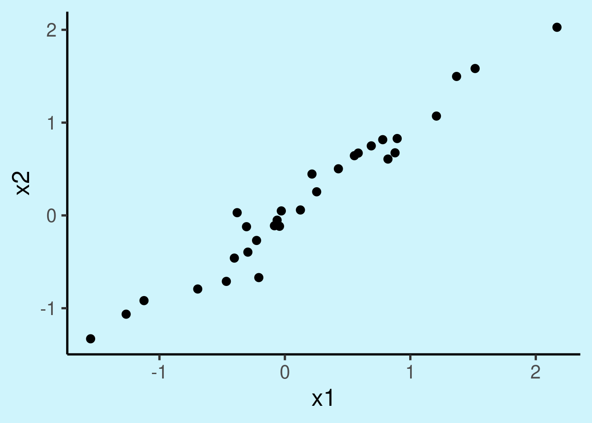
… y obtener los estimados del modelo:
# construir modelos
xy_mod_cat <- lm(formula = y ~ x1, data = xy_datos_cat)
summary(xy_mod_cat)
Call:
lm(formula = y ~ x1, data = xy_datos_cat)
Residuals:
Min 1Q Median 3Q Max
-5.898 -1.909 -0.094 1.809 5.506
Coefficients:
Estimate Std. Error t value Pr(>|t|)
(Intercept) -2.997 0.558 -5.37 2.3e-06 ***
x1b 1.814 0.842 2.16 0.036 *
---
Signif. codes: 0 '***' 0.001 '**' 0.01 '*' 0.05 '.' 0.1 ' ' 1
Residual standard error: 2.95 on 48 degrees of freedom
Multiple R-squared: 0.0882, Adjusted R-squared: 0.0693
F-statistic: 4.65 on 1 and 48 DF, p-value: 0.0362
… graficar los tamaños de efecto:
ci_df <- data.frame(param = names(xy_mod_cat$coefficients),
est = xy_mod_cat$coefficients, confint(xy_mod_cat))
ggplot(ci_df, aes(x=param, y=est)) +
geom_hline(yintercept = 0, color="red", lty = 2) +
geom_pointrange(aes(ymin = X2.5.., ymax = X97.5..)) +
labs(x = "Parámetro", y = "Tamaño de efecto") +
coord_flip()
… y los gráficos diagnósticos del modelo:
plot_model(xy_mod_cat, type = "diag")[[2]]`geom_smooth()` using formula = 'y ~ x'
Cuadro con los coeficientes (estimados):
Estimate Std. Error t value Pr(>|t|)
(Intercept) -2.9974 0.55825 -5.3693 2.2677e-06
x1b 1.8140 0.84160 2.1554 3.6172e-02El modelo encontró que \(\beta_1\) (el tamaño de efecto de ‘x1’) es 1.814 y que es significativamente diferente de 0 (p = 0.03617)
Los valores simulados de los parámetros de regresión pueden compararse con el resumen del modelo lm() para tener una idea de la precisión del modelo:
Tenga en cuenta que en este caso el intercepto se refiere a la estimación del nivel ‘a’ en el predictor categórico, que se utilizó como base:
# graficar
ggplot(xy_datos_cat, aes(x = x1, y = y)) +
geom_boxplot() +
geom_hline(yintercept = xy_mod_cat$coefficients[1], col = "blue")
mean(xy_datos_cat$y[xy_datos_cat$x1 == "a"])[1] -2.9974
“Los machos con puntas de pico más grandes y puntiagudas tuvieron más éxito en ganar control de territorios en el lek.”
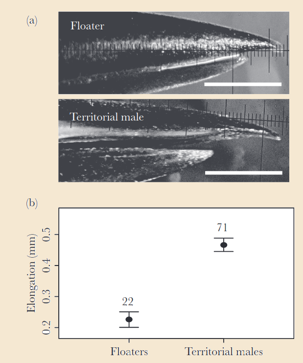
Ejercicio 6
En un modelo de regresión, los predictores categóricos también se representan como vectores numéricos. Más concretamente, los predictores categóricos se codifican como 0s y 1s, en los que 1 significa “pertenece a la misma categoría” y 0 “pertenece a una categoría diferente”. Mantuvimos el vector numérico original (‘x1_num’) al simular el juego de datos con el predictor categórico:
head(xy_datos_cat)| x1 | x1_num | y |
|---|---|---|
| b | 1 | 0.66298 |
| a | 0 | -3.84082 |
| a | 0 | 2.32549 |
| b | 1 | -0.43804 |
| a | 0 | 0.42758 |
| a | 0 | -1.75342 |
Observe que las “b” de la columna “x1” se convierten en 1 en la columna “x1_num” y las “a” se convierten en 0. Esto se denomina variable indicadora y el proceso se conoce como ‘codificación indicadora’ (dummy coding).
En realidad, podemos utilizar el vector numérico en el modelo de regresión y obtener exactamente los mismos resultados:
# summary model with categorical variable
summary(xy_mod_cat)$coefficients Estimate Std. Error t value Pr(>|t|)
(Intercept) -2.9974 0.55825 -5.3693 2.2677e-06
x1b 1.8140 0.84160 2.1554 3.6172e-02# construir modelos with dummy variable
xy_mod_num <- lm(formula = y ~ x1_num, data = xy_datos_cat)
# summary with dummy coding
summary(xy_mod_num)$coefficients Estimate Std. Error t value Pr(>|t|)
(Intercept) -2.9974 0.55825 -5.3693 2.2677e-06
x1_num 1.8140 0.84160 2.1554 3.6172e-02
Las cosas se complican un poco más cuando se codifica un predictor categórico con más de dos niveles. Pero la lógica es la misma.
Una interacción estadística se refiere a un efecto de una variable predictora que está mediado por una segunda variable.
Esto es más fácil de entender si se observa la interacción de una variable continua y una binaria:
# definir semilla
set.seed(123)
# numero de observaciones
n <- 50
b0 <- -4
b1 <- 3
b2 <- 1.7
b3 <- -3
error <- rnorm(n = n, mean = 0, sd = 3)
# variables aleatorias
x1 <- rbinom(n = n, size = 1, prob = 0.5)
x2 <- rnorm(n = n, mean = 0, sd = 1)
# interaccion se añade como el producto dex1 y x2
y <- b0 + b1 * x1 + b2 * x2 + b3 * x1 * x2 + error
x1 <- factor(x1, labels = c("a", "b"))
# crear data frame
xy_datos_intr <- data.frame(x1, x2, y)
head(xy_datos_intr)| x1 | x2 | y |
|---|---|---|
| b | 1.02557 | -4.0147 |
| a | -0.28477 | -5.1746 |
| a | -1.22072 | -1.3991 |
| b | 0.18130 | -1.0242 |
| a | -0.13889 | -3.8483 |
| b | 0.00576 | 4.1377 |
# construir modelos
xy_mod_intr <- lm(formula = y ~ x1 + x2 + x1 * x2, data = xy_datos_intr)
# guardar resumen para graficar lineas de mejor ajuste
xy_summ_intr <- summary(xy_mod_intr)
xy_summ_intr
Call:
lm(formula = y ~ x1 + x2 + x1 * x2, data = xy_datos_intr)
Residuals:
Min 1Q Median 3Q Max
-6.222 -1.664 -0.158 1.650 6.383
Coefficients:
Estimate Std. Error t value Pr(>|t|)
(Intercept) -4.193 0.570 -7.35 2.7e-09 ***
x1b 3.597 0.806 4.46 5.2e-05 ***
x2 1.327 0.682 1.95 0.0576 .
x1b:x2 -2.972 0.962 -3.09 0.0034 **
---
Signif. codes: 0 '***' 0.001 '**' 0.01 '*' 0.05 '.' 0.1 ' ' 1
Residual standard error: 2.83 on 46 degrees of freedom
Multiple R-squared: 0.396, Adjusted R-squared: 0.357
F-statistic: 10 on 3 and 46 DF, p-value: 3.29e-05También ayuda graficar los datos:
# graficar
ggplot(data = xy_datos_intr, aes(x = x2, y = y, color = x1)) +
geom_point(size = 3) +
geom_smooth(method = "lm", se = FALSE)`geom_smooth()` using formula = 'y ~ x'
… y los tamaños de efecto:
ci_df <- data.frame(param = names(xy_mod_intr$coefficients),
est = xy_mod_intr$coefficients, confint(xy_mod_intr))
ggplot(ci_df, aes(x=param, y=est)) +
geom_hline(yintercept = 0, color="red", lty = 2) +
geom_pointrange(aes(ymin = X2.5.., ymax = X97.5..)) +
labs(x = "Parámetro", y = "Tamaño de efecto") +
coord_flip()
También deberíamos revisar los gráficos de diagnóstico:
plot_model(xy_mod_intr, type = "diag")[[1]]
[[2]]`geom_smooth()` using formula = 'y ~ x'
[[3]]
[[4]]`geom_smooth()` using formula = 'y ~ x'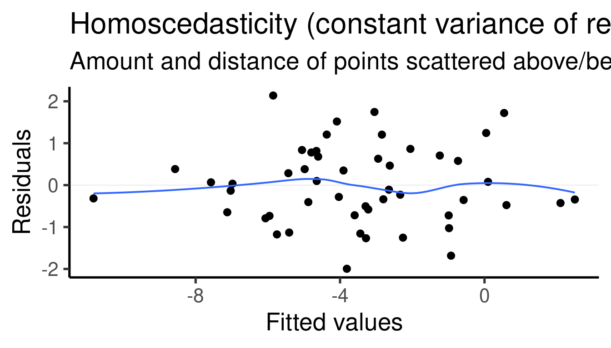
Cuadro con los coeficientes:
Estimate Std. Error t value Pr(>|t|)
(Intercept) -4.1930 0.57023 -7.3532 2.6978e-09
x1b 3.5974 0.80607 4.4629 5.1950e-05
x2 1.3274 0.68161 1.9474 5.7610e-02
x1b:x2 -2.9720 0.96227 -3.0885 3.4061e-03El modelo encontró que \(\beta_1\) (el tamaño de efecto de ‘x1-b’ a ‘x1-a’) es 3.59741 y que es significativamente diferente de 0 (valor p = 5.19496^{-5})
El modelo encontró que \(\beta_2\) (el tamaño de efecto de ‘x2’) es 1.32735 y que es significativamente diferente de 0 (p = 0.05761). Esto es en realidad la pendiente de la relación entre x2 e y cuando x1 = `a’
El modelo encontró que \(\beta_3\) (el tamaño de efecto del término de interacción ‘x1 * x2’) es -2.97196 y que es significativamente diferente de 0 (p = 0.00341). Esta es la diferencia entre las pendientes de x2 vs y cuando x1 = ‘a’ y x2 vs y cuando x1 = ‘b’.
Los valores simulados para los parámetros de regresión pueden compararse con el resumen del modelo lm() para tener una idea de la precisión del modelo:
\(\beta_1\) se simuló con un valor de 3 y se estimó en 3.597
\(\beta_2\) se simuló con un valor de 1.7 y se estimó en 1.327
\(\beta_3\) se simuló con un valor de -3 y se estimó en -2.972
“El aumento de la luz de la luna disminuye la actividad vocal de Agalychnis lemur aunque esta relación es mediada por la temperatura.”
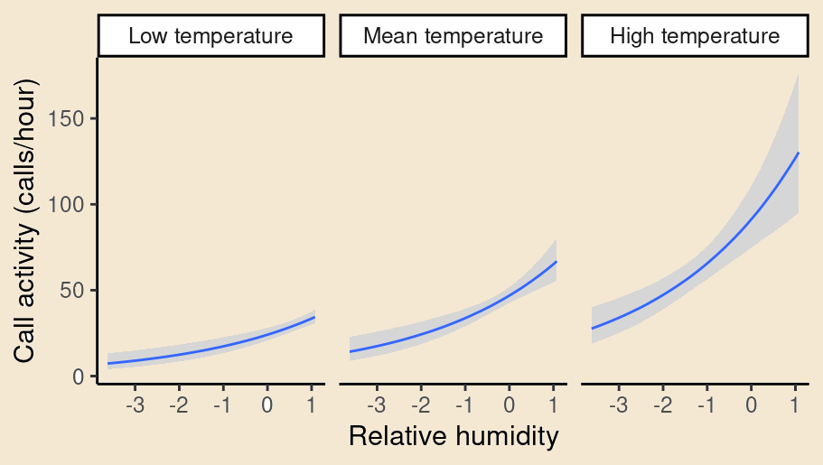
Los ecólogos utilizan habitualmente modelos estadísticos para detectar y explicar interacciones entre factores ecológicos, con el objetivo de evaluar si un efecto de interés cambia de signo o magnitud en distintos contextos. El artículo trata de los peligros de interpretan las interacciones estadísticas sin prestar atención a su propiedad fundamental de simetría, o a la escala de medida, ya sea aditiva o multiplicativa. Acá pueden acceder al artículo.
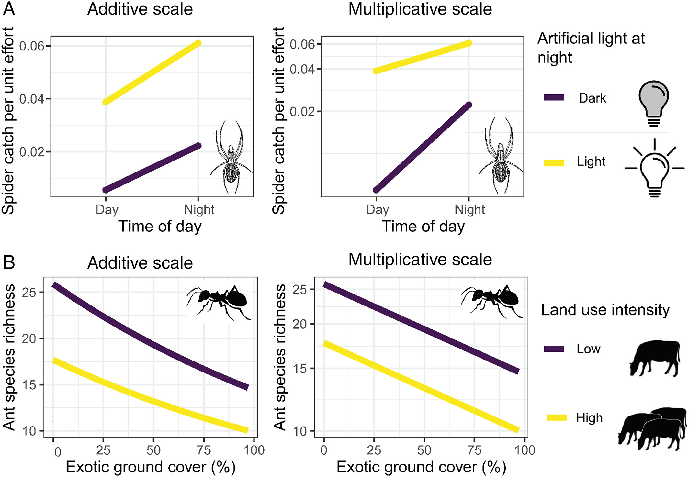
Ejercicio 7
Modifique el código usado para simular un único predictor asociado aumentando gradualmente el error. Esto se hace aumentando el argumento ‘sd’ en error <- rnorm(n = n, sd = 2).
Mire cómo los errores más grandes afectan la inferencia (debe volver a correr los modelos)
error <- rexp(n = n, rate = 0.2). Esto crea un error con una distribución exponencial (por lo tanto no normal). Se supone que esto es problemático para el poder inferencial de estos modelos. Compare las estimaciones que obtuvo con los valores de la simulación (‘b0’ y ‘b1’). Explore la distribución de los residuos (plot(nombre_del_modelo)) para los modelos de error ‘normal’ y ‘exponencial’.# definir semilla
set.seed(123)
# numero de observaciones
n <- 50
b0 <- -4
b1 <- 3
b2 <- -2
error <- rnorm(n = n, mean = 0, sd = 1)
# variables aleatorias
x1 <- rnorm(n = n, mean = 0, sd = 1)
# hacer x2 muy parecido a x1
x2 <- x1 + rnorm(n = n, mean = 0, sd = 0.3)
cor(x1, x2)[1] 0.94642Construya un modelo de regresión múltiple para estos datos (y ~ x1 + x2). Puede utilizar el mismo código que en la sección Añadir más de un predictor: regresión múltiple.
¿Cómo afecta a la inferencia la presencia de predictores colineales? Realice los gráficos de diagnóstico para este modelo (plot(nombre_del_modelo)).
Simule un juego de datos con tres predictores en los que sólo dos de ellos son altamente colineales. Ajuste un modelo de regresión múltiple (y ~ x1 + x2 + x3) para esos datos y observe cómo la colinealidad afecta a la estimación del predictor no colineal.
Los GLM nos permiten modelar la asociación a variables respuesta que no siguen una distribución normal. Además, permiten modelar distribuciones que se asemejan más al proceso que generó los datos. El siguiente código crea un juego de datos con una respuesta que representa cuentas (por lo tanto, no normal):
# definir semilla
set.seed(1234)
# numero de muestas
n <- 50
# coeficientes
b0 <- 1.2
b1 <- 1.3
b2 <- 0
#generar variables
y <- rpois(n = n, lambda = 6.5) # lambda = tasa promedio de exitos
x2 <- seq(-0.5, 0.5, , length(y))
x1 <- (log(y) - b0 - b2 * x2) / b1
# crear data frame
xy_datos_pois <- data.frame(x1, x2, y)
head(xy_datos_pois)| x1 | x2 | y |
|---|---|---|
| 0.14330 | -0.50000 | 4 |
| 0.57378 | -0.47959 | 7 |
| 0.57378 | -0.45918 | 7 |
| 0.57378 | -0.43878 | 7 |
| 0.76710 | -0.41837 | 9 |
| 0.57378 | -0.39796 | 7 |
También grafiquemos ‘x1’ vs ‘y’:
# graficar
ggplot(xy_datos_pois, aes(x = x1, y = y)) +
geom_point() 
La relación no parece muy lineal ni la varianza parece ser constante a través de ‘x1’.
Podemos relajar el requisito de la distribución normal con GLMs. glm() es una función básica de R que nos ayuda a hacer el truco. Para este ejemplo la distribución más apropiada es Poisson. Esto se puede establecer en el argumento `family’ así:
glm_pois <- glm(formula = y ~ x1 + x2, data = xy_datos_pois, family = poisson())
Que es equivalente a esto:
Como puede ver el único argumento extra comparado con lm() es family. El resto es simplemente la “fórmula” y los “datos” con los que ya estamos familiarizados. Así que, de nuevo, podemos aprovechar nuestros conocimientos sobre los modelos lineales para extenderlos a estructuras de datos más complejas.
También necesitamos ejecutar summary() para obtener el resultado del modelo:
summary(glm_pois)
Call:
glm(formula = y ~ x1 + x2, family = poisson(), data = xy_datos_pois)
Coefficients:
Estimate Std. Error z value Pr(>|z|)
(Intercept) 1.20e+00 1.29e-01 9.31 < 2e-16 ***
x1 1.30e+00 2.20e-01 5.92 3.2e-09 ***
x2 1.39e-16 1.90e-01 0.00 1
---
Signif. codes: 0 '***' 0.001 '**' 0.01 '*' 0.05 '.' 0.1 ' ' 1
(Dispersion parameter for poisson family taken to be 1)
Null deviance: 3.9471e+01 on 49 degrees of freedom
Residual deviance: 2.2204e-16 on 47 degrees of freedom
AIC: 186.9
Number of Fisher Scoring iterations: 3
Cuadro de los coeficientes (estimados):
Estimate Std. Error z value Pr(>|z|)
(Intercept) 1.2000e+00 0.12889 9.3106e+00 1.2709e-20
x1 1.3000e+00 0.21960 5.9200e+00 3.2198e-09
x2 1.3882e-16 0.19016 7.3003e-16 1.0000e+00El modelo nos dice que \(\beta_1\) (el tamaño de efecto de ‘x1’) es 1.3 y que es significativamente diferente de 0 (p = 3.21981^{-9}). Esto se interpreta en realidad como que un aumento de 1 unidad de ‘x1’ resulta en ‘y’ (tasa) en un factor de exp(1.3) = 3.6693.
El modelo también nos dice que \(\beta_2\) (el tamaño de efecto de ‘x2’) es 1.38824^{-16} y que es significativamente diferente de 0 (p = 1). Esto significa que un aumento en 1 unidad de ‘x2’ resulta en ‘y’ (tasa) en un factor de exp(1.38824^{-16}) = 1.
“La riqueza de especies de mariposas es de tres a cuatro veces mayor cuando aumenta el hábitat natural en el paisaje circundante (en un radio de 2 km), mientras que la abundancia de mariposas se asociaba negativamente con el aumento del tiempo transcurrido desde el último incendio.”
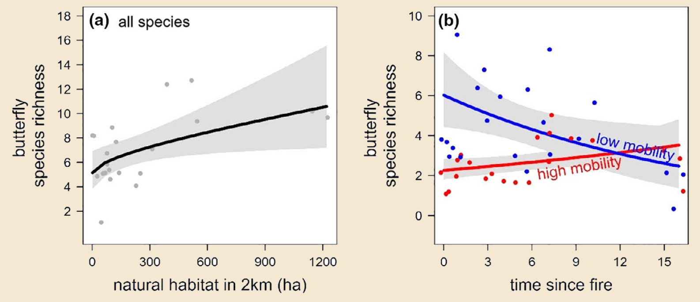
Ejercicio 8
lm() (con una distribución gaussiana), compare los resultados y compruebe los residuos (plot_model(model_name, type = "diag"))
Existen muchas otras funciones de distribución y enlace:
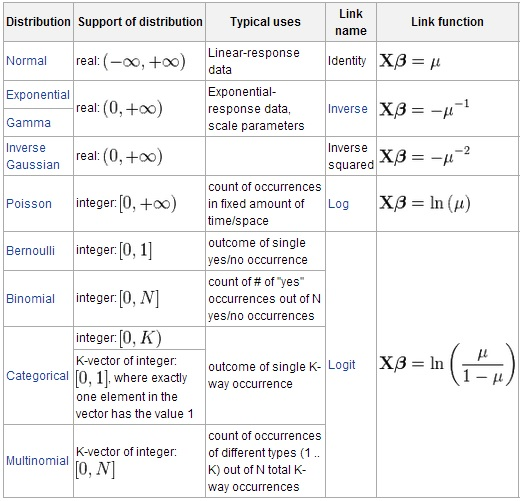
A veces nuestros conjuntos de datos incluyen estructuras con varios niveles de organización. Por ejemplo, cuando tomamos muestras de varios individuos de diferentes poblaciones. En esos casos, la variación en el nivel estructural superior (poblaciones) podría impedir la detección de patrones en el nivel inferior (individuos).
Vamos a simular algunos datos que se asemejan a ese escenario. Tenemos dos predictores continuos (x1) y una respuesta continua (y). Cada muestra procede de 1 de 8 poblaciones diferentes (poblacion):
# x<- 1
# definir semilla
set.seed(28)
# numero de observaciones
n <- 300
b0 <- 1
b1 <- 1.3
poblacion <- sample(0:8, size = n, replace = TRUE)
error <- rnorm(n = n, mean = 0, sd = 2)
# variables aleatorias
x1 <- rnorm(n = n, mean = 0, sd = 1)
y <- b0 + poblacion * 2 + b1 * x1 + error
# add letters
poblacion <- letters[poblacion + 1]
# create data set
xy_datos_mixto <- data.frame(x1, y, poblacion)
head(xy_datos_mixto, 10)| x1 | y | poblacion |
|---|---|---|
| 1.54607 | 3.3378 | a |
| 0.56834 | 3.1399 | a |
| -0.63855 | 15.2824 | i |
| 0.98424 | 2.6610 | a |
| 1.05355 | 3.7312 | b |
| -0.82294 | 3.0189 | a |
| -1.32373 | 3.2186 | c |
| 2.17854 | 19.0542 | i |
| 2.26484 | 15.4549 | i |
| -0.77843 | 11.6670 | h |
Podemos explorar la relación entre ‘y’ y ‘x1’ con un gráfico:
ggplot(data = xy_datos_mixto, aes(x = x1, y = y)) +
geom_point()
¿Puede ver claramente el patrón de asociación entre las dos variables que hemos utilizado para simular los datos? Podemos seguir explorando los datos con un modelo de regresión lineal simple:
summary(lm(y ~ x1, data = xy_datos_mixto))
Call:
lm(formula = y ~ x1, data = xy_datos_mixto)
Residuals:
Min 1Q Median 3Q Max
-11.755 -5.119 0.186 4.602 12.409
Coefficients:
Estimate Std. Error t value Pr(>|t|)
(Intercept) 8.852 0.325 27.21 <2e-16 ***
x1 0.633 0.329 1.92 0.055 .
---
Signif. codes: 0 '***' 0.001 '**' 0.01 '*' 0.05 '.' 0.1 ' ' 1
Residual standard error: 5.63 on 298 degrees of freedom
Multiple R-squared: 0.0123, Adjusted R-squared: 0.00895
F-statistic: 3.7 on 1 and 298 DF, p-value: 0.0554
A pesar de haber simulado un \(\beta_1\) distinto de cero, no tenemos ninguna asociación significativa según este modelo y la estimación de \(\beta_1\) está muy lejos de la simulada. Esta pobre inferencia se debe a que estamos ignorando una característica importante de nuestros datos, la agrupación de las muestras en “poblaciones”.
Los modelos de efectos mixtos (también conocidos como modelos multinivel o modelos de efectos variables) pueden ayudarnos a tener en cuenta estas características adicionales, mejorando significativamente nuestro poder de inferencia. Coloreemos cada una de las poblaciones para ver cómo covarían las variables en cada subgrupo de datos:
ggplot(data = xy_datos_mixto, aes(x = x1, y = y, color = poblacion)) +
geom_point()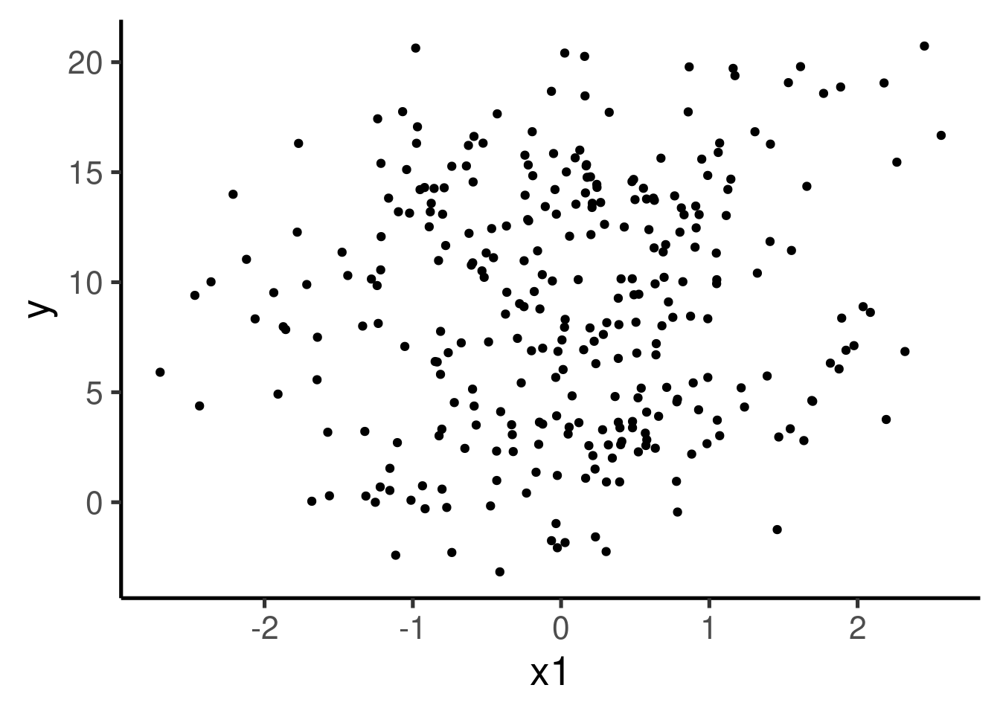
Parece haber un patrón claro de asociación positiva entre x1 e y. El patrón se hace un poco más evidente si mostramos cada población en su propio panel:
ggplot(data = xy_datos_mixto, aes(x = x1, y = y, color = poblacion)) +
geom_point() +
facet_wrap( ~ poblacion) +
geom_smooth(method = "lm", se = FALSE) `geom_smooth()` using formula = 'y ~ x'
Construyamos un modelo de efectos mixtos utilizando la población como intercepto variable:
mix_eff_mod <- lmer(formula = y ~ x1 + (1 | poblacion), data = xy_datos_mixto)Que es equivalente a esto:
Podemos ver el resultado del modelo igual que con un modelo lm():
summary(mix_eff_mod)Linear mixed model fit by REML. t-tests use Satterthwaite's method [
lmerModLmerTest]
Formula: y ~ x1 + (1 | poblacion)
Data: xy_datos_mixto
REML criterion at convergence: 1296.4
Scaled residuals:
Min 1Q Median 3Q Max
-3.524 -0.657 -0.032 0.612 3.245
Random effects:
Groups Name Variance Std.Dev.
poblacion (Intercept) 30.07 5.48
Residual 3.76 1.94
Number of obs: 300, groups: poblacion, 9
Fixed effects:
Estimate Std. Error df t value Pr(>|t|)
(Intercept) 8.788 1.831 8.003 4.8 0.0014 **
x1 1.317 0.115 290.068 11.4 <2e-16 ***
---
Signif. codes: 0 '***' 0.001 '**' 0.01 '*' 0.05 '.' 0.1 ' ' 1
Correlation of Fixed Effects:
(Intr)
x1 -0.003
El modelo detectó correctamente el patrón simulado y la estimación de \(\beta_1\) (1.317) es muy cercana al valor simulado.
“… el tamaño corporal mostró una correlación negativa con la frecuencia baja del canto.”
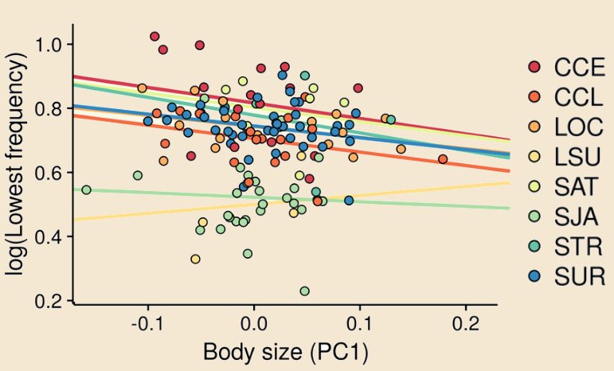
Cuadro con los coeficientes (estimados):
Estimate Std. Error df t value Pr(>|t|)
(Intercept) 8.7881 1.8315 8.0031 4.7983 1.3569e-03
x1 1.3166 0.1151 290.0679 11.4395 2.9326e-25
El modelo encontró que \(\beta_1\) (el tamaño de efecto de ‘x1’) es 1.31665 y que es significativamente diferente de 0 (p = 2.93263^{-25})
Los valores simulados de los parámetros de regresión pueden compararse con el resumen del modelo lmer() para tener una idea de la precisión del modelo:
La varianza del intercepto para cada población fue de 29.95624 y la desviación estándar de 5.47323
Los interceptos estimados para cada población son:
ranef(mix_eff_mod)$poblacion| (Intercept) | |
|---|---|
| a | -8.22835 |
| b | -6.17134 |
| c | -4.23048 |
| d | -1.30838 |
| e | 0.24573 |
| f | 2.22552 |
| g | 3.91556 |
| h | 5.75609 |
| i | 7.79566 |
# sumar interceptos por poblacion a el intercepto total
interceptos <- ranef(mix_eff_mod)$poblacion + fixef(mix_eff_mod)[1]
# calcular los promedios por poblacion en los datos
prom_pobs <- aggregate(y ~ poblacion, xy_datos_mixto, mean)
# unir
cbind(interceptos, prom_pobs= prom_pobs[,2])| (Intercept) | prom_pobs | |
|---|---|---|
| a | 0.55975 | 0.86151 |
| b | 2.61677 | 2.76860 |
| c | 4.55762 | 4.90112 |
| d | 7.47972 | 7.73174 |
| e | 9.03384 | 8.87649 |
| f | 11.01363 | 10.77650 |
| g | 12.70366 | 12.62651 |
| h | 14.54420 | 14.62110 |
| i | 16.58376 | 16.42520 |
poblacion) es de 29.95624 y la desviación estándar de 5.47323
La paradoja de Simpson es un fenómeno en estadística en el que una tendencia aparece en varios grupos de datos pero desaparece o se invierte cuando se combinan los grupos. Se ha utilizado para ilustrar el tipo de resultados engañosos que puede generar el ignorar la estructura en los datos y las relaciones causales entre variables.

Tomado de wikipedia
La estructura de los datos debido a observaciones pertenecientes al mismo grupo puede ser tomada en cuenta usando el grupo como un factor aleatorio, tal y como se hizo en el ejemplo anterior.

Este modelo básico incluye una función de enlace que cuando es gausiana (i.e. normal) equivale a un modelo lineal y cuando no, a un modelo generalizado
Cuando el \(\beta_{grupo}\) es diferente entre grupos (i.e. cuando el intercepto difiere entre grupos) es un modelo mixto con intercepto variable (i.e. aleatorio)
Este manual solo pretende sugerir un abordaje estadístico centrado en los modelos de regresión desde el cual se pueden llevar a cabo adecuadamente la mayoría de los análisis estadísticos que usamos en biología. El manual no tiene como objetivo explicar en detalle las particularidades de los modelos generalizados y mixtos. Note que estos modelos, principalmente los mixtos, pueden adaptarse a otras estructuras de datos mas complejas no cubiertas aquí, como lo son las pendientes aleatorias, pendientes e interceptos aleatorios, estructuras de correlación (i.e. autocorrelación espacial o temporal, pedigrís o árboles filogenéticos), medidas repetidas y el uso de pseudoreplicas, entre otras.
Spake, R., Bowler, D. E., Callaghan, C. T., Blowes, S. A., Doncaster, C. P., Antao, L. H., … & Chase, J. M. (2023). Understanding ‘it depends’ in ecology: a guide to hypothesising, visualising and interpreting statistical interactions. Biological Reviews.
Harrison, X. A., Donaldson, L., Correa-Cano, M. E., Evans, J., Fisher, D. N., Goodwin, C. E., & Inger, R. (2018). A brief introduction to mixed effects modelling and multi-model inference in ecology. PeerJ, 6, e4794.
R version 4.4.1 (2024-06-14)
Platform: x86_64-pc-linux-gnu
Running under: Ubuntu 22.04.4 LTS
Matrix products: default
BLAS: /usr/lib/x86_64-linux-gnu/blas/libblas.so.3.10.0
LAPACK: /usr/lib/x86_64-linux-gnu/lapack/liblapack.so.3.10.0
locale:
[1] LC_CTYPE=en_US.UTF-8 LC_NUMERIC=C
[3] LC_TIME=es_CR.UTF-8 LC_COLLATE=en_US.UTF-8
[5] LC_MONETARY=es_CR.UTF-8 LC_MESSAGES=en_US.UTF-8
[7] LC_PAPER=es_CR.UTF-8 LC_NAME=C
[9] LC_ADDRESS=C LC_TELEPHONE=C
[11] LC_MEASUREMENT=es_CR.UTF-8 LC_IDENTIFICATION=C
time zone: America/Costa_Rica
tzcode source: system (glibc)
attached base packages:
[1] stats graphics grDevices utils datasets methods base
other attached packages:
[1] car_3.1-2 carData_3.0-5 sjPlot_2.8.16 lmerTest_3.1-3
[5] lme4_1.1-35.5 Matrix_1.7-0 viridis_0.6.5 viridisLite_0.4.2
[9] ggplot2_3.5.1 knitr_1.48
loaded via a namespace (and not attached):
[1] gtable_0.3.5 xfun_0.46 htmlwidgets_1.6.4
[4] remotes_2.5.0 insight_0.20.2 lattice_0.22-6
[7] numDeriv_2016.8-1.1 vctrs_0.6.5 tools_4.4.1
[10] sjstats_0.19.0 generics_0.1.3 datawizard_0.12.1
[13] tibble_3.2.1 fansi_1.0.6 pkgconfig_2.0.3
[16] ggeffects_1.7.0 lifecycle_1.0.4 compiler_4.4.1
[19] farver_2.1.2 sjmisc_2.8.10 munsell_0.5.1
[22] sketchy_1.0.3 htmltools_0.5.8.1 yaml_2.3.10
[25] pillar_1.9.0 nloptr_2.1.1 crayon_1.5.3
[28] tidyr_1.3.1 MASS_7.3-61 boot_1.3-30
[31] abind_1.4-5 nlme_3.1-165 tidyselect_1.2.1
[34] sjlabelled_1.2.0 packrat_0.9.2 digest_0.6.36
[37] performance_0.12.2 stringi_1.8.4 dplyr_1.1.4
[40] purrr_1.0.2 labeling_0.4.3 splines_4.4.1
[43] fastmap_1.2.0 grid_4.4.1 colorspace_2.1-1
[46] cli_3.6.3 magrittr_2.0.3 utf8_1.2.4
[49] withr_3.0.1 scales_1.3.0 rmarkdown_2.27
[52] gridExtra_2.3 evaluate_0.24.0 mgcv_1.9-1
[55] rlang_1.1.4 Rcpp_1.0.13 glue_1.7.0
[58] xaringanExtra_0.8.0 rstudioapi_0.16.0 minqa_1.2.7
[61] jsonlite_1.8.8 R6_2.5.1